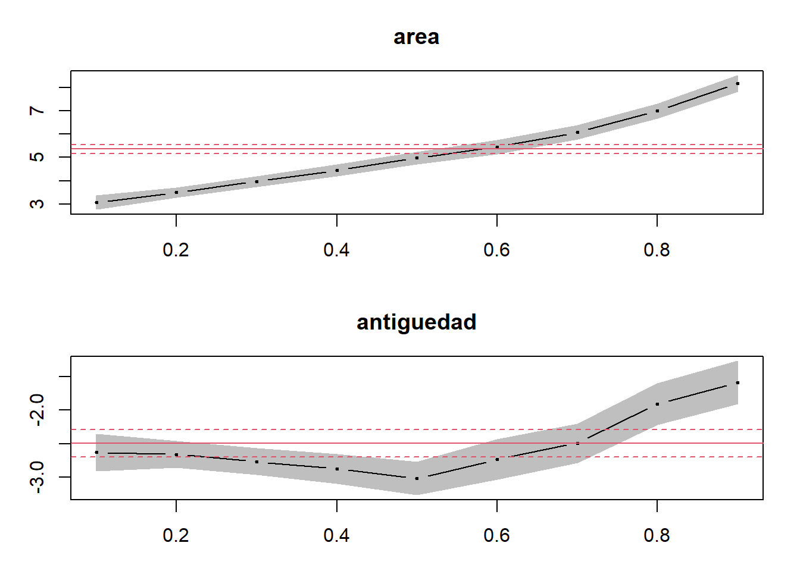
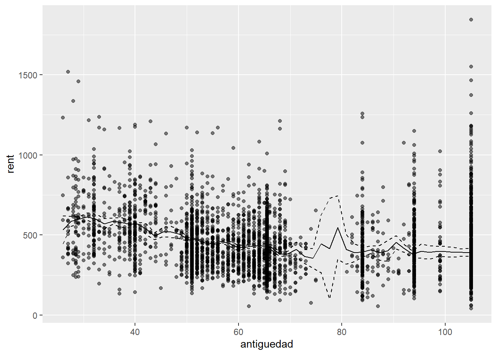

Considere los datos en el archivo capital_trabajo.csv. Con una función de producción Cobb-Douglas las participaciones del capital y el trabajo en el valor de la producción se pueden estimar usando una regresión lineal. En algunas aplicaciones es de interés conocer el cociente de las participaciones estimadas.
[10 puntos] Usando 500 repeticiones bootstrap estime el error estándar del cociente capital-trabajo. Para ello realice el siguiente procedimiento:
Genere una matriz vacía de 500 filas para coleccionar sus relaciones estimadas.
En cada una de las repeticiones obtenga una muestra con remplazo a partir de la muestra original.
Estime por MCO los coeficientes sobre el log del capital y el log del trabajo. La variable dependiente es el log del valor de la producción. Calcule el cociente de los coeficientes estimados. Guarde el cociente en la matriz.
Repita ii. y iii. 500 veces.
Calcule la desviación estándar de los cocientes estimados.
En cada repetición bootstrap debemos estimar el siguiente modelo y obtener el ratio de los coeficientes:
Realizamos la regresión y el cálculo del cociente en cada una de las \(b\) repeticiones:
for (i in1:B){ data.b <-data.kl[sample(nrow(data.kl),obs, replace =TRUE),]#Corremos regresión m<-lm(lvalor ~ lcapital + ltrabajo,data=data.b)#Guardamos en cada entrada el ratio estimado beta[i,1] <-as.numeric(m$coefficients[2] / m$coefficients[3])}
El error estimado es simplemente la desviación estándar de los B estadísticos estimados:
sd(beta$beta)
[1] 0.05090312
El error estándar estimado es de 0.0509.
[10 puntos] Calcule ahora el error estándar jackknife, para lo que realizará \(N\) estimaciones de la ecuación del valor de la producción y en cada una de ellas calculará el cociente de interés. En cada una de las \(i=1,\ldots,N\) repeticiones, eliminará de la muestra la observación \(i\), por lo que cada regresión será estimada con \(N-1\) observaciones. Obtenga la desviación estándar de los \(N\) cocientes estimados.
En cada repetición eliminamos la \(i\)-ésima observación, estimamos la regresión y calculamos el cociente de interés:
for (i in1:nrow(data.kl)){ data.j <- data.kl %>%filter(!row_number() == i )#Corremos regresión m <-lm(lvalor ~ lcapital + ltrabajo,data=data.j)#Guardamos en cada entrada el ratio estimado beta.jackknife[i,1] <-as.numeric(m$coefficients[2] / m$coefficients[3])}
Obtenemos el error estándar. En clase quizás nos faltó ver la fórmula del error estándar, pero es la siguiente:
donde \(\hat\theta_{-i}\) es el estadístico estimado usando la muestra que omite la \(i\)-ésima observación y \(\bar{\hat\theta}\) es la media de los \(N\) estadísticos estimados.
[10 puntos] Compruebe que sus cálculos aproximan el error estándar obtenido con el Método Delta. Para ello, después de estimar la ecuación del valor de la producción con la muestra original, use la función deltaMethod del paquete car.
Si usamos el método Delta para calcular el error estándar de la combinación no lineal, obtenemos algo muy parecido, 0.052
Considere los datos en MunichRent.rda. Estos archivos contienen información sobre rentas en la ciudad de Munich, rent. Se desea explicar la renta en función de la antiguedad de los edificios en renta, controlando por el área, area. La variable yearc indica cuándo fue construido el edificio. Construya la antiguedad como antiguedad=2023-yearc. Para leer los datos basta con ejecutar load(“MunichRent.rda”).
[10 puntos] Estime por MCO la relación entre la renta, rent y la antiguedad del edificio, controlando por area y efectos fijos de bath y kitchen. Interprete el coeficiente sobre la antiguedad.
Primero por MCO obtenemos una relación positiva entre la renta y el área y una relación negativa entre la renta y la antiguedad, como era de esperarse. Ambos coeficientes estimados son estadísticamente significativos.
load("../files/MunichRent.rda")MunichRent <- MunichRent %>%mutate(antiguedad=2023-yearc)#Por MCOsummary(r.mco <-lm(rent ~ area + antiguedad,data=MunichRent))
Call:
lm(formula = rent ~ area + antiguedad, data = MunichRent)
Residuals:
Min 1Q Median 3Q Max
-734.76 -94.75 -10.87 82.55 1063.17
Coefficients:
Estimate Std. Error t value Pr(>|t|)
(Intercept) 264.3407 10.3561 25.52 <2e-16 ***
area 5.3618 0.1165 46.01 <2e-16 ***
antiguedad -2.4913 0.1239 -20.11 <2e-16 ***
---
Signif. codes: 0 '***' 0.001 '**' 0.01 '*' 0.05 '.' 0.1 ' ' 1
Residual standard error: 149.3 on 3079 degrees of freedom
Multiple R-squared: 0.4181, Adjusted R-squared: 0.4177
F-statistic: 1106 on 2 and 3079 DF, p-value: < 2.2e-16
[10 puntos] Estime la misma relación que en la parte a., pero con una regresión mediana. Interprete el coeficiente sobre la antiguedad.
Ahora realizamos un modelo LAD:
summary(r.q50 <-rq(rent ~ area + antiguedad,data=MunichRent,tau=0.5))
Call: rq(formula = rent ~ area + antiguedad, tau = 0.5, data = MunichRent)
tau: [1] 0.5
Coefficients:
Value Std. Error t value Pr(>|t|)
(Intercept) 310.17202 11.60978 26.71643 0.00000
area 4.97688 0.14688 33.88284 0.00000
antiguedad -3.02031 0.14599 -20.68795 0.00000
Los coeficientes estimados son de una magnitud similar a los de MCO.
[10 puntos] Estime ahora una regresión cuantil para cada uno de los deciles de la distribución condicional de la renta y represente en una gráfica los coeficientes por regresión cuantil junto con el coeficiente de MCO para las variables del área y la antiguedad. ¿Concluye que vale la pena modelar la relación de las rentas en función del área y la antiguedad usando regresión cuantil?
Regresión cuantil para cada decil:
r.q1_9 <-rq(rent ~ area + antiguedad,data=MunichRent,tau=1:9/10)plot(summary(r.q1_9), parm=c("area","antiguedad"))

Los efectos de la antiguedad en la distribución de precios son no lineales. Los efectos en los cuantiles superiores crecen más rápido con la antiguedad. Quizás esto sugiera una preferencia por edificios viejos. La regresión cuantil sí fue útil para revelar esta característica.
[10 puntos] Suponga que no está dispuesto a imponer una relación lineal entre la antiguedad y la renta. Considere entonces el siguiente modelo:
\[rent_i=\beta_0+\beta_1 area + \lambda(antiguedad_i)+\varepsilon_i\]
Use el estimador de Robinson (1988) para estimar este modelo parcialmente lineal. Grafique sus resultados e interprételos.
Seleccionamos el ancho de banda:
bw <-npplregbw(formula=rent ~ area | antiguedad,data=MunichRent,regtype="ll")
Implementamos el estimador de Robinson:
model.pl <-npplreg(bw)summary(model.pl)
Partially Linear Model
Regression data: 3082 training points, in 2 variable(s)
With 1 linear parametric regressor(s), 1 nonparametric regressor(s)
y(z)
Bandwidth(s): 2.368969
x(z)
Bandwidth(s): 0.8672961
area
Coefficient(s): 5.143053
Kernel Regression Estimator: Local-Linear
Bandwidth Type: Fixed
Residual standard error: 145.801
R-squared: 0.4445272
Continuous Kernel Type: Second-Order Gaussian
No. Continuous Explanatory Vars.: 1
g <-fitted(g.robinson$plr2)se <- g.robinson[["plr2"]][["merr"]]lci <- g - se[,1]uci <- g + se[,2]#Este objeto nos dicen dónde fueron evaluadosantiguedad.eval <- g.robinson[["plr2"]][["evalz"]][["V1"]]fitted <-data.frame(antiguedad.eval, g,lci,uci)ggplot() +geom_point(data=MunichRent, aes(antiguedad,rent), color='black', alpha=0.5) +geom_line(data=fitted, aes(antiguedad.eval, g), linetype='solid')+geom_line(data=fitted, aes(antiguedad.eval, uci), linetype='dashed')+geom_line(data=fitted, aes(antiguedad.eval, lci), linetype='dashed')

Pregunta 3
Stevenson & Wolfers (2006) estudian los efectos de la introducción de leyes que permiten el divorcio unilateral. La librería bacondecomp incluye los datos usados en dicho artículo. Usaremos los datos de 1964 a 1996 para mostrar cómo impactan las leyes de divorcio express (unilateral) a la tasa de suicidios en mujeres. Comience llamando los datos:
[5 puntos] Estime el efecto de diferencia en diferencias asumiendo tendencias paralelas y el estimador de two-way fixed effects. Obtenga los errores estándar primero asumiendo errores clásicos y luego usando una matriz agrupada a nivel estado.
[5 puntos] Realice la descomposición de Goodman-Bacon (2021). Construya un gráfico donde muestre en el eje el peso otorgado a cada comparación 2x2 que el estimador de TWFE realiza mecánicamente y en el eje el efecto estimado correspondiente a cada comparación. Interprete el gráfico obtenido.
type weight avg_est
1 Earlier vs Later Treated 0.10544 1.70904
2 Later vs Always Treated 0.39872 -6.72231
3 Later vs Earlier Treated 0.27432 3.31462
4 Treated vs Untreated 0.22151 -5.56686
La tabla anterior nos da los valores de los estimadores \(2\times 2\) con sus correspondientes pesos. El promedio ponderado es exactamente el estimador de efectos fijos:
coef_bacon <-sum(df_bacon$estimate * df_bacon$weight)print(paste("Suma ponderada de la descomposición =",round(coef_bacon, 4)))
[1] "Suma ponderada de la descomposición = -2.824"
Las comparaciones que más pesan en el estimador de efectos fijos son las de estados tratados con los que siempre estuvieron tratados en el panel, recibiendo dos de esas comparaciones alrededor de 12.5 y el 6% del peso (los dos triángulos verdes más hacia la derecha). otra comparación que recibe alrededor de 6.5% del peso es la de los tratados con los nunca tratados (cruz morada más hacia la derecha). En total, las comparaciones con estados que iniciaron siendo tratados se llevan el 40% del peso. Las comparaciones entre los tratados tarde y los tratados temprano también reciben un peso alto de 27%.
[10 puntos] Implemente el estimador de Callaway & Sant’Anna (2021) para estimar los efectos del tratamiento específicos para cada cohorte, usando el paquete did. Utilice como grupo de comparación los estados que nunca son tratados. La columna stid es un identificador numérico de los estados (lo requerirá cuando use att_gt del paquete did).
[10 puntos] Reporte los resultados agregados obtenidos a partir del estimador Callaway & Sant’Anna (2021), usando una agregación dinámica que muestre los efectos promedio para cada periodo antes y después del tratamiento. Grafique e interprete los resultados.
Se obtiene una reducción en la tasa de suicidios que es estadísticamente significativa a partir de 5 años después de la introducción de la legislación.